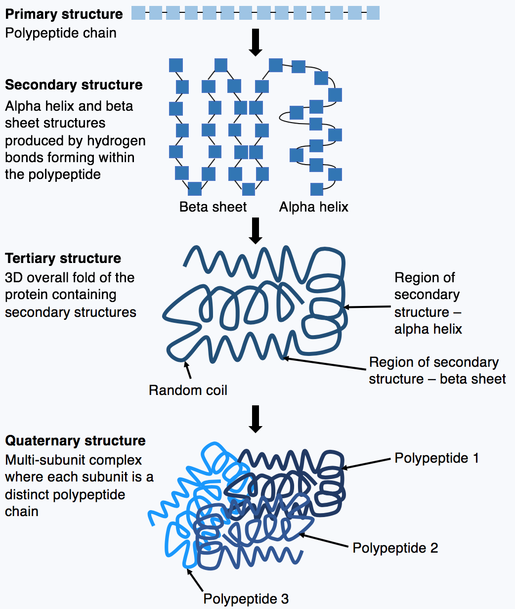

{date}
{title}
There are only five people to have won a Nobel Prize twice (nobody has won three or more). The most famous of these is Marie Curie,
who is the only person aside from Linus Carl Pauling to have won two Nobel Prizes in different fields, and the only person to have won
two Nobel Prizes in different sciences (Physics and Chemistry). However, none of the other four are widely known outside of their
fields despite their obviously great accomplishments. In particular, Pauling's work was foundational for modern chemistry and biology,
yet most people forget his name by the time they close their high school textbooks. His name does indirectly live on today in
popular culture as the original namesake for both Linux and Linus Tech Tips; Linus Torvalds, creator of Linux, and Linus Sebastian,
creator of Linus Tech Tips, were both named after Pauling.

Nobel Foundation (Public Domain)
{kind=link}
Pauling lived to the age of 93. This is a photograph of him in 1952 that was used for his second Nobel Prize.
The Life of a Linus
Linus Pauling was born in 1901 in the United States and became interested in chemistry at a young age. When he was 15, he became
eligible to start his studies at Oregon State University, although he was missing two credits required for his high school diploma.
After his request to take the two credits concurrently was denied, he dropped out and began working to save money for tuition. He
enrolled at age 16, and graduated with a degree in chemical engineering five years later. Three years later, he received a PhD in
physical chemistry and mathematical physics from Caltech. He also got married during his graduate studies and started a family.
Pauling then travelled to Europe on a fellowship to study under Arnold Sommerfeld, Niels Bohr, and Erwin Schrödinger,
shaping his future research interests.

Similarly to how Pauling was admitted to university without a high school diploma, a man named David L. Kelly was admitted to medical
school without an undergraduate degree at the age of 20. After becoming an accomplished neurosurgeon, he received his bachelor's
degree 70 years later.
When he returned, Pauling became an assistant professor at Caltech and befriended J. Robert Oppenheimer during this time.
However, Pauling severed ties with Oppenheimer after the latter showed up at his house while he was at work to invite Pauling's wife
to Mexico for a fling. Later, Oppenheimer wanted Pauling to lead the Chemistry division of the Manhattan Project, but he
declined for his family's sake. After the war was over, Pauling became a peace activist due to his wife's pacifism, joining the Emergency
Committee of Atomic Scientists, an NGO founded by Albert Einstein to promote nuclear disarmament. When he was invited to
speak at a conference abroad, the US State Department denied him a passport due to this activism, and only fully reinstated it in 1954 when
he won the Nobel Prize in Chemistry. He later signed the Russell-Einstein Manifesto, presented a petition to the UN, debated with Edward
Teller (inventor of the hydrogen bomb) on TV, and supported a major study that eventually proved the public health risks of nuclear testing,
leading to a partial ban. For this, he was awarded the Nobel Peace Prize in 1962, as well as an honourary diploma from his high school (arguably
the more prestigious of the two).

{kind=link}
In a way, J. Robert Oppenheimer attempting to initiate yet another affair with a close friend's wife probably led to Linux's little
penguin mascot being created.
Career
Pauling's doctoral dissertation was a collection of papers on the structures of various crystals determined through X-ray crystallography.
Essentially, X-rays scatter when they enter a crystal, and the resulting diffraction pattern allows the shape of the crystal to be determined.
During his fellowship in Europe, he became interested in the quantum electronic structure of the atom, and formulated what are now known as
Pauling's rules (for predicting the crystal structure of compounds) upon his return. Shortly after becoming full professor at Caltech, he
introduced the concept of orbital hybridization, where atomic orbitals mix together to form chemical bonds. In 1932, he came up with
electronegativity, the propensity for an atom to attract electrons when bonding, and established what we now call the Pauling Scale for
the electronegativity of different elements.
After his work on bonding, Pauling shifted his focus from inorganic crystals to biological molecules, starting with proteins. X-ray diffraction
was more difficult to apply to these structures, but eventually, Pauling deduced the helical structure of hemoglobin. He then proposed in 1951
that the alpha helix and beta sheet structures were responsible for the secondary structure of proteins, which we now know is true. However, he also
proposed that the structure of DNA was a triple helix instead of the correct double helix, and later described this mistake as the biggest
disappointment in his life. Nonetheless, this paved the way for James Watson and Francis Crick to correctly identify the structure of DNA,
deeming Pauling the father of molecular biology. Pauling also showed that sickle cell anemia was a result of abnormal protein structure,
which marked the first time in history that a disease was understood at the molecular level, and opened the door to molecular genetics.

{kind=link}
Hydrogen bonding between peptide chains leads to particular folding and coiling patterns, which is considered the secondary structure
of a protein (in contrast to its primary structure, which is just its sequence of amino acids). Different secondary structures combine
to produce a three-dimensional tertiary structure, and different tertiary structures then combine to form the quaternary structure of a protein.
Following his significant work in molecular biology, Pauling became an advocate for what he called "orthomolecular medicine", or megavitamin
therapy. The idea was that taking high doses of vitamins could prevent or treat disease, including mental illness. Additionally, Pauling
believed that high doses of vitamin C could prevent colds and treat terminal cancer. He himself took 3 grams of it every day while
continuing to publish his own research on the topic. When other clinical trials failed to find any of the claimed benefits, Pauling was not
dissuaded, instead accusing the researchers of fraud and continuing to investigate vitamin C as a treatment, including for children with brain
injuries. Today, Pauling's work on vitamins is generally regarded as pseudoscience and no longer discussed seriously in academia, although some
practitioners still believe in the benefits of orthomolecular medicine.
Death
In 1994, Pauling died in his home from prostate cancer. His wife, Ava Helen Miller, died 13 years earlier, and Pauling never remarried. Of their
four children, only Linda (born in 1932) is still alive today. The others include Linus Jr. (1925-2023), a psychiatrist, Edward (1937-1997), a geneticist,
and Peter (1931-2003), who continued his father's work determining the structure of biological molecules using X-ray crystallography. Pauling's life was
not just interesting, but also vastly improved the lives of billions of people today. Without his innovative techniques that combined mathematics,
physics, chemistry, and biology, there is simply no way to know what the state of the medical sciences would be today. Despite his later crankery,
he will forever remain as a scientific pillar supporting the foundations of contemporary human society.